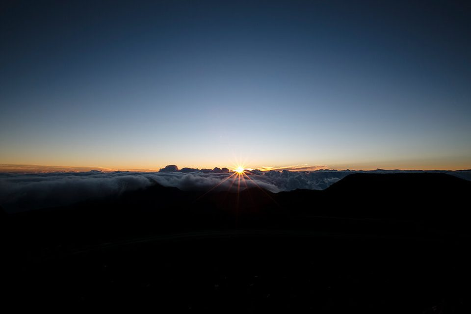
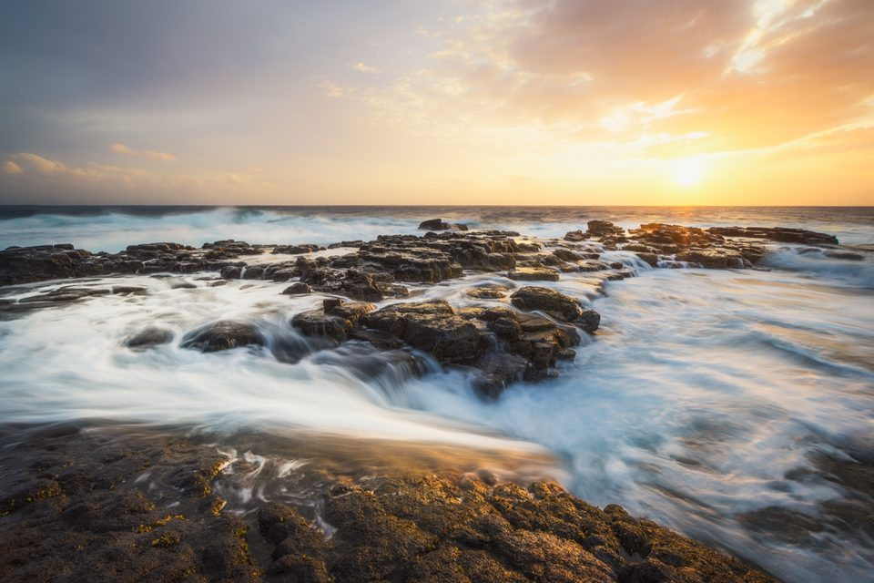
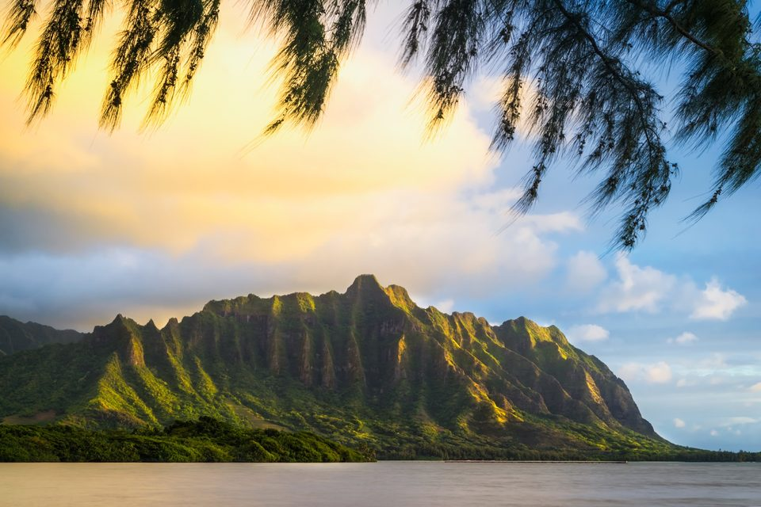
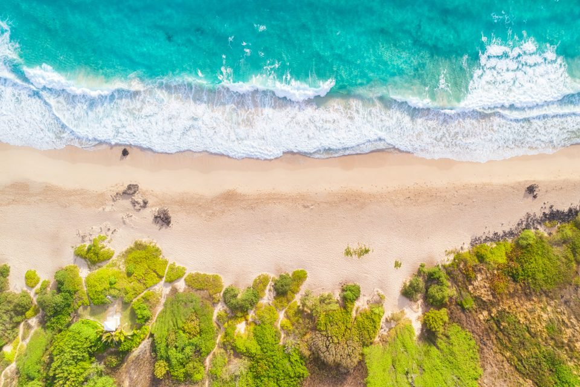
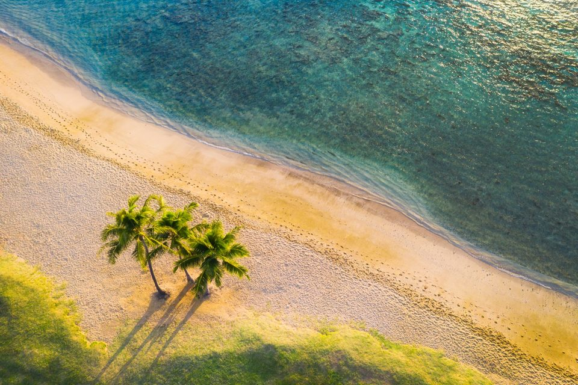

Hawaiʻi wall art prints
Every print is made to order on Oʻahu, on canvas or metal. Pick a size and see it to scale on a wall before you buy.
39 prints















Every print is made to order on Oʻahu, on canvas or metal. Pick a size and see it to scale on a wall before you buy.
39 prints




